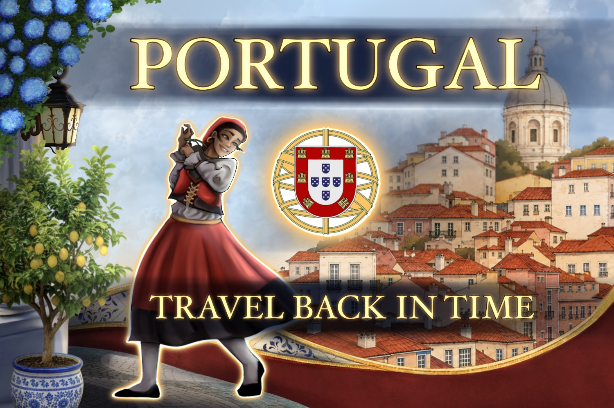
01 | OVERVIEW
Portugal: Travel Back in Time is an interactive website featuring the timeline of the history of Portugal, famous Portuguese individuals, an interactive chat bot and resources. Narrative was a big component for the history aspects, which helped me to properly create a pleasing and accessible experience. The goal was to educate users about Portugal's beautiful culture.
02 | PROBLEM
“How might we assist English‑speaking 2nd and 3rd generation Portuguese‑North Americans explore how Portugal has changed over time , by letting them interact with live historical and demographic data and key events in an accessible English‑language interface.”
03 | TESTING & RESEARCH
Historical research is scattered across many websites
and presented in text-heavy formats, making it less enjoyable
for young audiences.
A 2024 study by Haliti-Sylaj found
that frequent short-form video consumption
was associated with reduced attention spans and poor academic
performance.
This information highlights the importance of
educational content being engaging and interactive.
(Haliti-Sylaj and Sadiku 64)
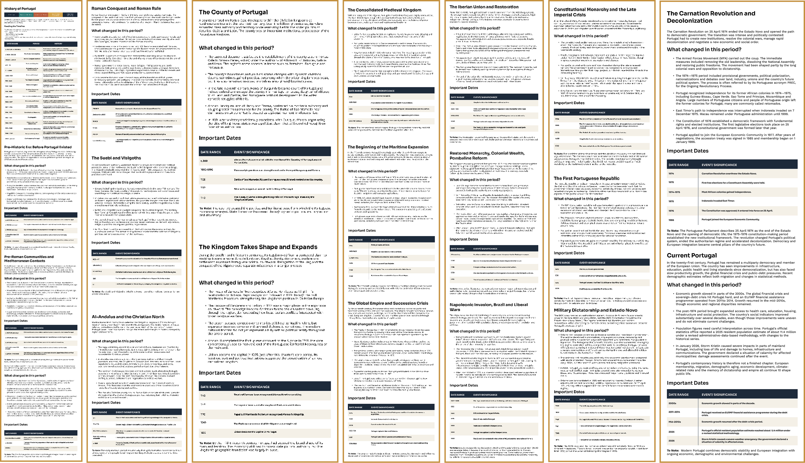
Historical Research
Before starting the project, I explored Portugal's historical timeline and considered how this information could be transformed into a digital interface.
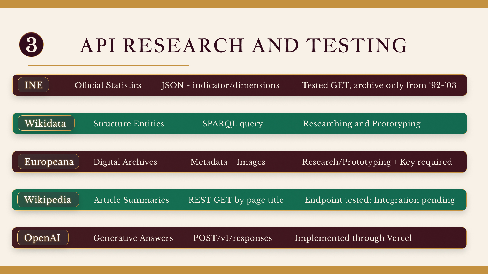
API Exploration
As this was my first experience using APIs, I investigated how they function and how historical information could be retrieved and presented.
Wireframes & UML Use Case Diagram
I developed wireframes and a UML use-case diagram to plan navigation, user interactions, and the website's overall information structure.
Homepage → Timeline → Historical Periods
Homepage → Notable People → Person Detail
Homepage → Resources → Resource Link
Dynamic Data → Chatbot → Question → Response
Website Management → Update Content
Website Management → Manage People & Resources → API Deployment
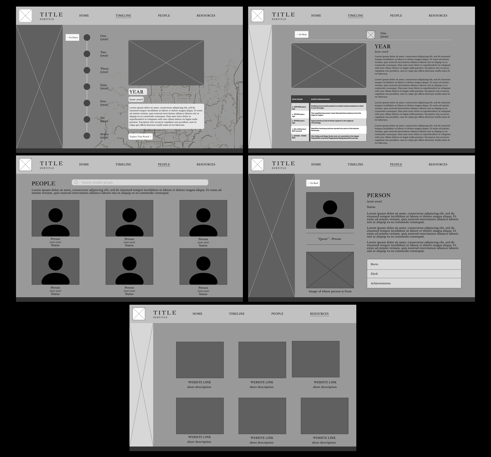
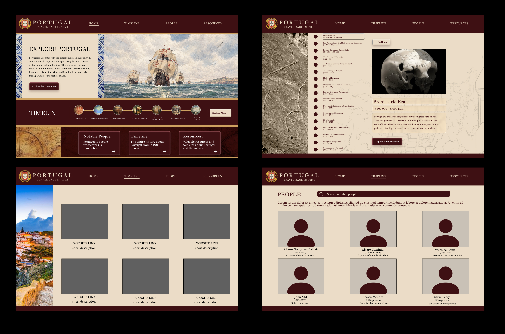
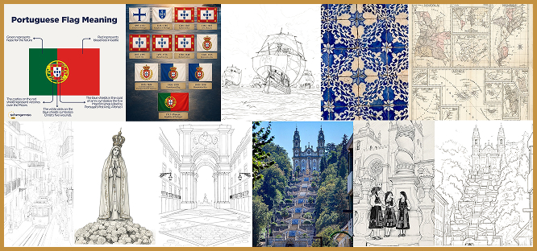
Research Outcomes
These investigations helped me identify technical challenges and make more informed decisions about presenting complex historical information through an interactive experience.
04 | STEPS & IDENTITY
The development of the visual identity, website layouts and typography.
Research
Exploring Portugal's history and culture from both my own life and the accounts of others I consulted.
Structure
Organizing all of the historical timelines, famous important people, and extra resources I gathered linked on the official Portugal tourist website.
Identity
Developing the colour palette based on colours of the Portuguese flag typography, and any extra branding.
Build
Refining the layouts, fixing the responsiveness, and fix any interactive features.
Structure & Navigation
In the beginning, I planned to organize the website across
multiple pages.
However, as I began coding, I decided to create a single-page
layout instead. This simplified the navigation.
Colour Palette
These warm-heritage colours were chosen because of
the colours of the Portuguese flag.
The red represents the blood of the nation and
the green stands for the hope for the future.
The yellow and white represents the armillary sphere,
symbolizing Portugal’s Age of Discoveries.
Black Raspberry
#421522
Plum Burgundy
#641F32
Old Gold
#E4B754
Warm Ivory
#F7F1E7
Supreme Green
#006A52
Ink Black
#322C2C
Typography
I chose these typefaces to represent Portugal's
historical identity as one of the oldest countries in Europe.
Jacques François is elegant, perfect for headings,
DM Sans is readable for navigation, and Libre Baskerville
too was readable for longer text blocks.
Jacques François
Used for major headings and historical atmosphere.
DM Sans
Used for navigation, buttons, and interface text.
Libre Baskerville
Used for longer descriptions and reading content.
Design Direction
The resulting design direction combines a structured information architecture, traditional Portuguese-inspired colours, expressive typography, and contemporary interaction patterns. Together, these decisions established a foundation for a website intended to make historical exploration more approachable.
05 | DRAFTS & ITERATIONS
From initial sketches to refined interfaces, each iteration helped me shape the website's structure, navigation, and visual identity.
Low Fidelity
I started the process by creating low-fid wireframes in Figma.
I wanted to explore how I could explore all of Portugal's information
I wanted to include.
Focusing mainly on placement, navigation,
and visual hierarchy. I decided to focus on
colours and typography next.
These early wireframes helped me figure out what
needed improvement before moving on.
Mid-High Fidelity
As I moved into mid-high fidelity designs, I
tried out different colour palettes and typography,
which were inspired by Portugal's flag.
Using Figma, I decided where I would place the information.
I wanted to create a vintage/historical appearance while the site
stayed readable.
Final High Fidelity
This was my final choice. Created in Figma and coded in Phoenix
Code. I was very satisfied with the simplicity of these choices.
The images in my mid-high fidelity wireframes were very complicated
to implement. So I came back to FIGMA and simplified my choices.
Although I didn't add colours here,
I decided to continue with the colours I had used in my previous wireframes
decision were ideal.
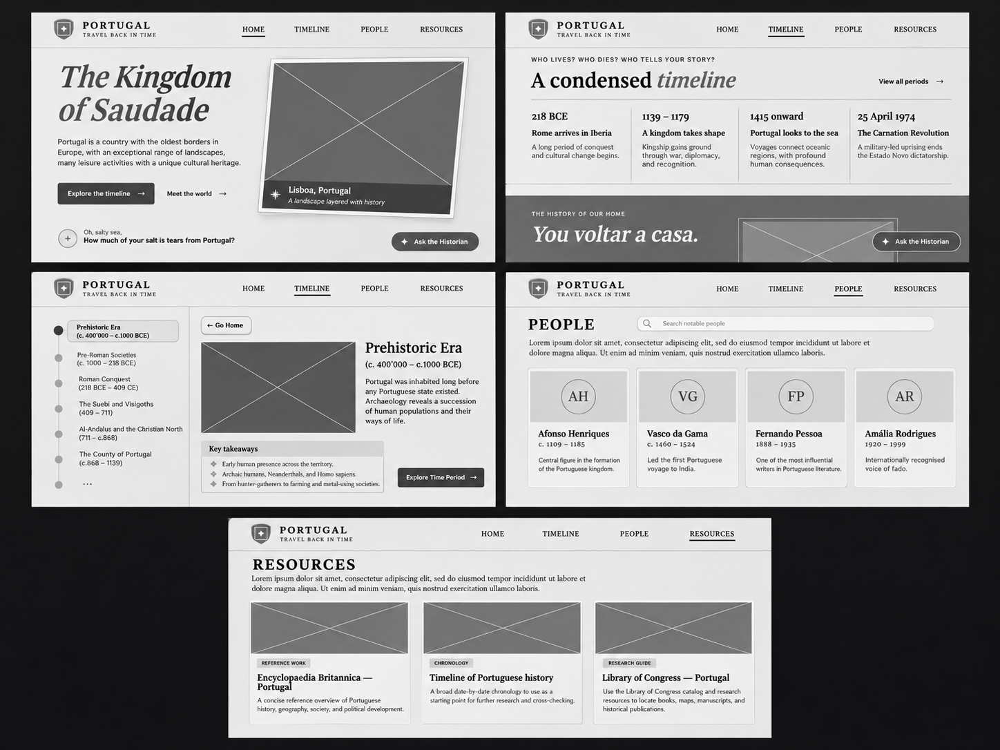
Reflection on Changes
Looking back at my earlier wireframes, I was trying to
include way too much information and make the website complicated,
more than it needed to be.
As I moved onto high-fidelity designs,
I realized that my original ideas weren't practical and too complicated
to develop. I simplified the layouts, removed unnecessary
elements, and changed the website
into one page with some pop-ups.
The final design ended up being very different from my first ideas, I
think these changes made the website easier to navigate while
keeping the aesthetic I wanted.
06 | FINAL PRODUCT
This is the final Portugal: Travel Back in Time website design. The finished experience contains historical content, interactivity, simple navigation, and imagery of Portugal.
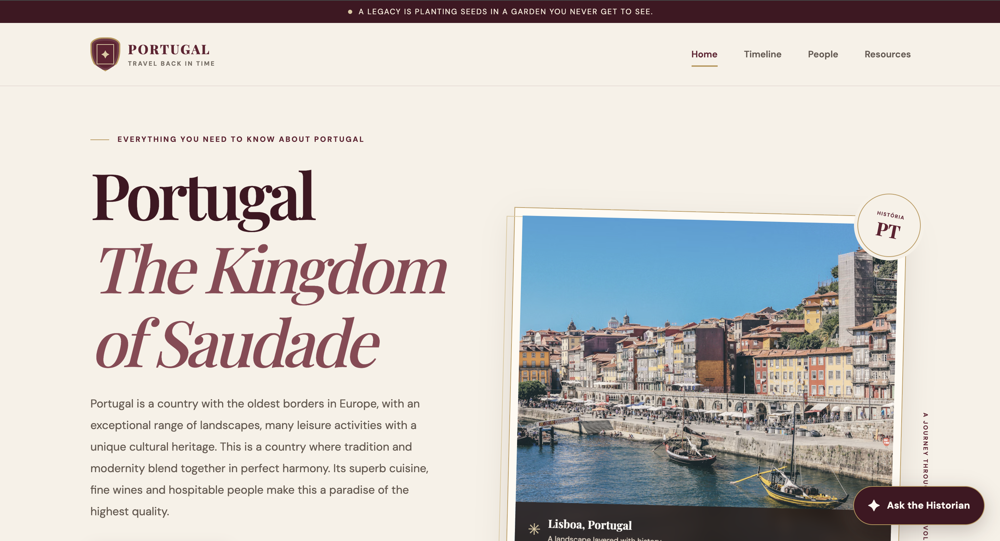
Homepage
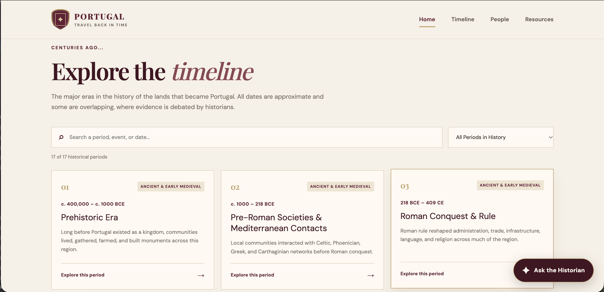
Timeline
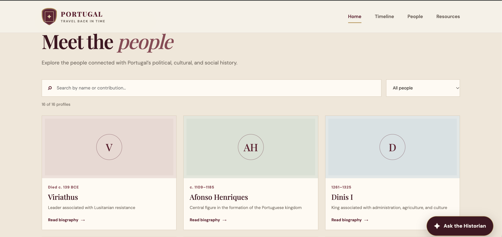
People
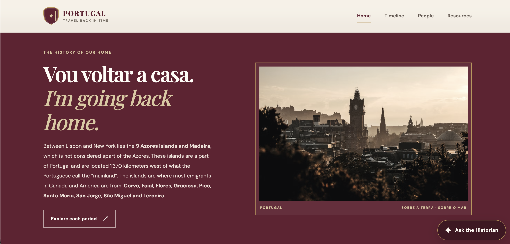
Exploration
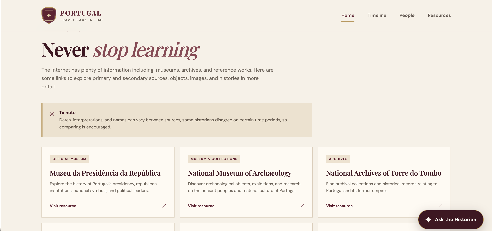